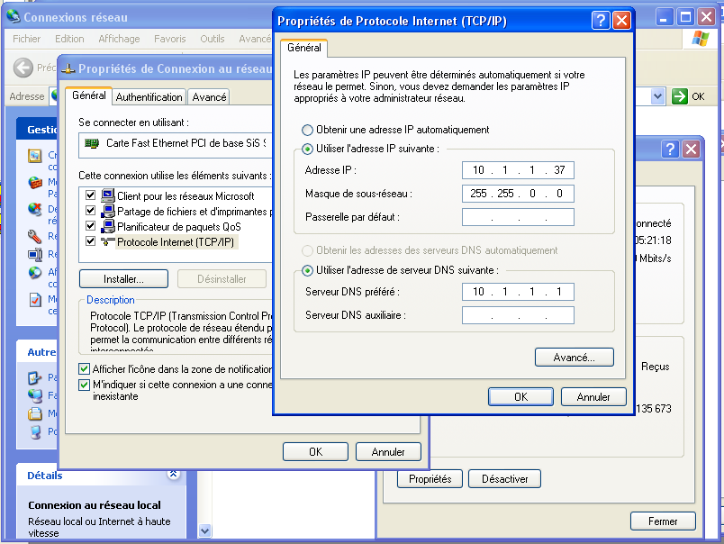

Introduction générale
Mon stage au sein de la STIR m’a permis de plonger directement dans le monde professionnel
et de lier la théorie à la pratique. Alors, grâce à cette expérience, j’ai pu approfondir
et transformer mes connaissances théoriques en compétences pratiques,
ce qui est essentiel pour construire les premières expériences professionnelles.
Eventuellement, dans ce rapport de stage, j’ai essayé de transmettre
une image fidèle de toutes les tâches effectuées au sein de la STIR.
Etude de la societe tunisienne des industries de raffinage
L’organigramme de la STIR
Présentation de la STIR
Presentation des activites du stage
les étapes à suivre pour installer Windows XP en insérant le CD-ROM dans le lecteur,
en modifiant le BIOS si nécessaire, en sélectionnant le disque
dur pour l'installation et en personnalisant le logiciel.
En plus la possibilité de créer ou supprimer des partitions sur les disques durs,
de choisir entre le format NTFS et FAT, et de configurer la connexion
Internet et l'activation de Windows XP avec Microsoft.
Il est également mentionné que pour effectuer une mise à niveau de Windows XP,
il faut suivre les mêmes étapes d'installation que pour une installation
normale en utilisant le CD de Windows XP SP2.
en modifiant le BIOS si nécessaire, en sélectionnant le disque
dur pour l'installation et en personnalisant le logiciel.
En plus la possibilité de créer ou supprimer des partitions sur les disques durs,
de choisir entre le format NTFS et FAT, et de configurer la connexion
Internet et l'activation de Windows XP avec Microsoft.
Il est également mentionné que pour effectuer une mise à niveau de Windows XP,
il faut suivre les mêmes étapes d'installation que pour une installation
normale en utilisant le CD de Windows XP SP2.



Infrastructure informatique
Le système GMAO (application CIMIX) :
CIMIX est en effet un logiciel de Gestion de la Maintenance Assistée par
Ordinateur (GMAO) qui est conçu pour répondre à tous les besoins
de gestion du service de maintenance.
Ordinateur (GMAO) qui est conçu pour répondre à tous les besoins
de gestion du service de maintenance.
Le système GRH (Gestion des Ressources Humaines) :
Grâce à ce système, la STIR peut gérer efficacement
de nombreuses tâches liées au personnel.
Qui sont comme suit :
de nombreuses tâches liées au personnel.
Qui sont comme suit :
- Gestion administrative du personnel :
- Fiche employée.
- Suivi de carrière.
- Suivi assiduité.
Le système production (application STIREX et Bilan Matière):
Le système est capable d'assurer le suivi des niveaux de stock des produits pétroliers ainsi
que des opérations de sortie des produits finis et semi-finis de la raffinerie.
que des opérations de sortie des produits finis et semi-finis de la raffinerie.
- STIREX (gestion des expéditions).
- BILMAT (gestion du mouvement des produits).
Le réseau global de la STIR :
L'objectif d'un réseau informatique est de permettre à plusieurs machines,
telles que des ordinateurs, de se connecter entre elles afin de faciliter
les échanges d'informations, tels que le partage de ressources,
le transfert de fichiers,
la messagerie ou l'exécution de programmes à distance
telles que des ordinateurs, de se connecter entre elles afin de faciliter
les échanges d'informations, tels que le partage de ressources,
le transfert de fichiers,
la messagerie ou l'exécution de programmes à distance
Conclusion générale
La combinaison de formation théorique et de stages pratiques a grandement contribué à mon niveau d'éducation,
me permettant ainsi de m'insérer facilement dans le monde professionnel.
Grâce à cela, j'ai pu atteindre les objectifs préalablement fixés,
tels que l'acquisition de connaissances théoriques et pratiques nécessaires
pour ma formation.
Lyna Moujahed
20 mins
Merci Pour Votre Attention